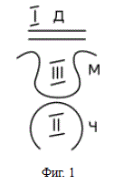
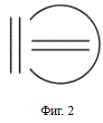
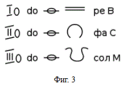
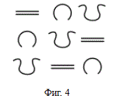

Беседа 3522 от 3877 · Беинса Дуно
Динамични движения
Добрата молитва.
„Зора се чудна зазорява“.


Та казвам: Втората фаза вие ще се научите да ходите. Не знаете как да чувствувате. Дойдете в чувствения свят, падате. И тогава по-дълго време взема на вас, докато се научите да не падате в чувствата. Първите седем години детето се учи да ходи, изучава динамиката на волята. Вторите седем години изучава динамиката, силата на сърцето. Чувствата се развиват. Третите седем години то развива широчината на ума, в ума има широчина. Сърцето показва движение. Чертежът – М е на ума, Ч е на чувствата и Д е на волята. Ч – това показва движението на сърцето. Ако вие сега не знаете как да съгласувате движението на вашата воля – Д, ако не знаете да съгласувате движението на вашия ум – М, ако не знаете да съгласувате движението на вашето сърце – Ч, вие сте в противоречие със себе си. Всичките неразположения, които се раждат, се раждат първо от сърцето или от човешката воля, или от човешкия ум.
Та казвам: Имате три октави. Динамиката Д, това е „ре“. Ч – това е „фа“ и М – това е „сол“. Най-първо започвате с „ре“, движение, „фа“ е на чувствата. Сега разбира се, това е един вътрешен процес. Този процес става в тялото, тия успоредни линии то е във вас, туй е волята, „ре“. Сърцето е „фа“, движение става в дихателната система, в течението на кръвта, в чувствуванията, които имате. При „сол“ движенията стават във вашата мисъл, в нервната система.
Та казвам: Движението на волята е успоредни линии. Движението на сърцето винаги иска да обсеби. Навсякъде искаш да вземеш нещо. Искаш да ядеш, то е сърцето. Намериш вода, искаш да пиеш, то е сърцето. Видиш някой часовник, туриш го на ухото. Сърцето каквото намери, го туря в своя джоб. Най-първо трябва да се научите, че всичко не се туря в джобовете. Знаеш, колко пъти са пострадали ученици или войници, които пушат, пък е забранено. Иде учителят или капитанът, войникът не може да изгаси цигарата, скрие я в джоба, случи се, че капитанът седи дълго време, цигарата запаля джоба. Или ученикът скрие цигарата, като че всичко е наред. Учителят ще намери някакъв въпрос, цигарата скрита в джоба, често изгаря джоба.
Та казвам: Някой път вие искате да скриете някоя ваша мисъл. То е побуждение на сърцето. Не че е лошо да скриете мисълта си, но тази мисъл, която скривате, не трябва да гори. Защото, ако гори вашето чувство, вие ще го турите някъде това чувство и ще ви причини вреда. Някой път вие страдате от някакво чувство. Чувството е турено там, дето не трябва. Човек трябва да се научи къде да туря своите чувства, къде да ги складира. Това значи да мислиш. Да складираш чувствата си, това значи да чувствуваш и сърцето ти да функционира правилно. Най-първо като туриш ръката на сърцето си, да чувствуваш онзи ритъм на сърцето. Сърцето има един отличен ритъм. Най-красивия ритъм в природата е на сърцето. Като хванеш някое животно, може да видиш страха, как кара сърцето да бие. Запример, хванете някоя птичка и вижте как бие сърцето ѝ бързо, как страхът се изразява в движение. Ако някой път сте хубаво разположени, имате светли мисли, светли чувства и ако турите ръката си на сърцето, ще видите как бие сърцето ви. Правете научни изследвания. Не само вие, но и учените хора не правят такива изследвания. Те не мислят, че тяхните чувства са свързани със сърцето. Философ е, но не знае, че сърцето тупти както трябва и как чувствата и мислите се отразяват на сърцето. Това не знае, а философия предава на хората. Казвам: Някой път ще чувствувате какъв е тонът на сърцето. Запример, ако е „фа“, някой път сърцето не взема „фа“ вярно, липсват му може би 5, 10, 15, 20 или 30 трептения. Знаете 30 трептения да липсват на един тон какво означава. Щом на „ре“ липсват трептения, движението не е правилно. Детето защо пада? Липсват му трептения. Туй дете няма изходна точка. Да кажем, ако имате една тежест и я турите на слаба пръчица, не може да издържи. Какво ще стане. Самата пръчица не може да издържи. Ще падне тежестта, понеже е по-тежко. Децата не вземат вярно „ре“. Затова като падне детето, казва: Вяе – не взема „ре“ верно. Като се научи детето да взема верно, то казва: „Вее“ /„ре“/. Най-първо детето казва: „Вяе“ /звук, когато детето плаче/. После казва: „Вее“. /Взема „ре“./ Вече наближава „ре“-то да е правилно. Щом като го вземе хубаво, то може да ходи. Вие наблюдавали ли сте децата когато вземат вярно „ре“? Вие сте ги наблюдавали, но сте забравили.
Вие сега сте във втората фаза. Първата фаза е минала, във втората фаза на вашето сърце сте. Малко хора има, които са минали във фазата на мисълта. Ще намериш „фа“ вече. „Фа“ не може да го вземе, всеки иска да вземе повече. Трябва да му намериш място на туй, което сам не можеш да носиш. Да ти пеят другите хора е едно, ти да пееш е друго. Който пее, той печели. Ти, който слушаш, подарък вземаш от него. На какво мязат подаръците? Туй, което ти си придобил, то прилича да прокараш вода в къщи, отвориш крана, водата тече. А пък подарък, този ти даде капка, онзи ти даде няколко капки, трябва да посетиш 20, 30 души. Казваш: „Нямам вода“. По една капчица ти дават, тогава много работи не стават лесно. Ако разчитате на чувствата на другите хора, ще бъдете формени просяци. Ако разчитате на чувствата на другите, на просия ще (се) упражняваш. Когато се научиш да разчиташ на чувствата си, тогава работиш.
Вие мислите, че чувствата са дадени от невидимия свят. Те са дадени, трябва да се канализират. Няма да очаквате от другите хора, да просите. Може да просите, няма нищо, не е лошо. Сега разбирайте. Има една песен, която е естествена. Как бихте вие го нарекли искането, желанието и хлопането? Дето казва: „Искане, желание, хлопане.“ Вие искането как го изразявате? Запример, идете при някоя ябълка, искате нещо от нея. Протягате ръка, откъсвате. Но то е волево движение. Как ще изразите движението на вашето сърце? За да направите правилно движение, трябва да вземете правилно „ре“. Ако в един човек е развита волята, правилно взема „ре“. Вие не сте забелязали, че тия хора, които имат развита воля, вземат по един начин. Онези, у които не е развита волята, те късат по друг начин. Те винаги ще откъснат някое клонче, ще направят някаква пакост. Тия, у които волята е развита, като късат, по един хармоничен начин късат. Някой откъсне, направи едно рязко движение и го тури в джоба. Вие сега не сте обръщали внимание. Или вземете, някои в яденето бързат. Във всички тия работи човек трябва да обръща внимание. По един несъзнателен начин волята се проявява. Вие кипнете изведнъж, то не е самовладане. Кипването не е наше. Турите тенджера с вода, кипне. Виновата ли е водата? Не е виновата. Раздразните се. От вас зависи, вие може да регулирате този огън, може да направите огъня силен или слаб. Аз съм наблюдавал водата като влезе в тенджерата, като видя тона какъв е, зная. Онзи, на когото волята е добре развита, който мисли, водата като кипи, музика има. Всичко е хармонично. На когото волята не е развита, водата кипи и изскача навън силно. Онзи направил така да кипи водата, че ти е приятно. Музикално пее. Тя, водата като кипи, казва: „Много умен е нашият господар, нашият господар е умен, добър, добър, много добър.“ /Като изговаряше тия думи, Учителят ги изговаряше така, че звуковете наподобяваха тихо кипяща вода./ Другата казва: „Грухав е нашият господар, глупав е нашият господар.“ /Учителят наподобява звука на буйно кипяща вода./ Изскача навън. Ако на един модерен топлилник туриш мляко, оставил си го малко, като се върнеш, изкипяло всичкото мляко. Много слаб огън ще туриш. Три фази имат модерните печки: една силна, при която изкипява, една слаба и една средна. На слабата целия ден да оставиш, никога няма да кипне. Като излизаш навън, третата фаза ще оставиш. Третата фаза е на волята. Тихото горене е на волята. Средното е „фа“, на ума е силно. Умът има силни трептения. Затова и умственият живот иде по-късно. Най-първо ние се спираме само на слабите движения. Волята има най-слабите движения. Най-слабите, но и те са най-лесните, „ре“. Волевите движения са най-лесни. На второ място са движенията на сърцето, най-мъчни са движенията на ума. Движенията на човешката душа и на човешкия дух са още по-мъчни. Трябва да се приспособим към движенията. Най-първо да усвоим движенията на нашата воля. Гамата трябва да пеем с движения. /Учителят кляка и като става пее „до“ с издигане ръцете нагоре. Левият крак напред и ръцете успоредно напред – пее „ре“. Ръцете настрани и десният крак напред – пее „ми“. Левият крак напред и ръцете пред гърдите една срещу друга – пее „фа“. Десният крак напред, отваряне ръцете настрани – пее „сол“. Ръцете с допрени пръсти горе, левият крак напред – пее „ла“. Ръцете горе но малко отворени, не успоредно – пее „си“. Ръцете долу и десният крак напред – пее до. Изпяхме гамата в движения./ Някой път като не сте разположени, направете едно упражнение. Дето ще се караш с някого, направи туй движение. Ще си помогнеш. Дето ще извършиш друга глупост, извърши тази глупост. Ти мислиш, че е глупаво да правиш тия движения. Тази глупост е за предпочитане пред всички други глупости. То е най-малката глупост. По-малка глупост от тази работа няма. /Учителят направи пак упражнението./ Понякой път, ако кипнете, направете упражнението. Аз ви казах това упражнение, за да се лекувате. Някой път, когато не ти върви нещо, пишеш, не върви, правиш нещо, не върви, готов си да кипнеш. Направи упражнението. Веднага ще се смени състоянието ти, като пеете тия тонове с движения. Както и да вземеш основия тон, не важи, само да има отношение между тоновете. Отношенията на трептенията да бъдат правилни. Я сега да направим всички упражнението. /Направихме всички упражнението./ Като правите упражнението, да има динамика, да не бъдат ръцете отпуснати. При „фа“ ръцете правят хубави полукръгове. (Фиг. 3). Вземаш нещо, на свят да го вземеш. Колкото се може повече пространство да обгърнете. Да привлечете слънцето при себе си.

Та казвам: Природата изисква да научим нещата. Тя не бърза. Тя не иска много знание, но онова, което знаеш, тя иска да го знаеш добре. Да се стремиш като произнесеш „до“, да се научиш да го произнасяш съвършено. Да дадеш на този тон сила, след туй да му дадеш съдържание и простор или да внесеш яснота на тона, топлота на тона и звучност. Звучността да се предава. Звучността зависи от динамиката на този тон. Мнозина от вас като говорите да има правилност на тона в говора. Някъде речта е силна, някъде е слаба, не върви по една права линия.

/Учителят нагласява цигулката и казва: Половин тон е по-ниско, да се не късат струните, от икономия. Учителят свири и ние пеем гамата, после „Тъги, скърби“./ Като пеете, де е погрешката, в ума или в сърцето? Не изпяхте правилно. Трябва човек да си концентрира ума и да произнесе един добър тон. /Учителят свири на цигулката много хубаво и тихо./ Знаеш, колко години ще ви вземе, докато направите туй упражнение? На един цигулар колко години му трябват, докато упражни лъка си. Не е лесна работа. Трудна работа. На пианиста му взема 10, 15, 20 години, докато се научи да свири бързо. Всички мислят с малко упражнения да минат. Природата обича много упражнения, безброй упражнения ще правиш. /Учителят свири живо./ Туй е на волята, туй е волево свирене. Пък има свирене и на ума. /Учителят свири./ Туй е на мисълта. Човек когато прави нещо, сърцето влага чувства, волята – сила и умът – мисли. Трябва да пазите една хармония. Ако човек не пази хармония, той се изтощава. Когато волята работи, тя работи по причина на сърцето. Волята не трябва да злоупотребява. Сърцето не е достатъчно да даде достатъчно енергия. Често умът кредитира сърцето. Сърцето не трябва да злоупотребява с ума. Тогава душата кредитира ума. /Учителят пее: „Вземай вярно тона „ре“, пей прекрасно „фа“, завърши със „сол“ добре и в живота ти ще сполучиш всичко, което ти желаеш.“/ Вземай това „ре“ добре, обръщай внимание на „фа“, а когато дойдеш до „сол“, внимавай с всичкия си ум как трябва да направиш работата, както си пял да свършиш. Щом не мислиш хубаво, ти си в „до“. След „до“ ще подготвиш „ре“, излизаш из неблагоприятните условия. „Ре“ е правата посока на движение, осмисля живота. Ти нагоре не може да излезеш, ако не вземеш една права посока. /Учителят пее: Постъпвай ти добре, ако искаш да имаш светлина в живота си за всякога. Без нея ти в тъмнина ще живееш и страдания ще понасяш. Учителят свири на цигулката тихо и ритмично./
Вземете вярно „ре“. „Ре“ се взема най-лесно. Волевите движения са най-лесни. Сърдечните са по-трудни, а умствените още по-трудни.
Само светлият път на Мъдростта води към Истината!
В Истината е скрит животът!
XXI година.
18 лекция на Младежкия окултен клас.
държана от Учителя на 6. III. 1942 г., петък, 5 ч. сутринта.
София – Изгрев.
Бележка (на стенографа):
На 20. II. и 27. II. 1942 г. Учителят не дойде.